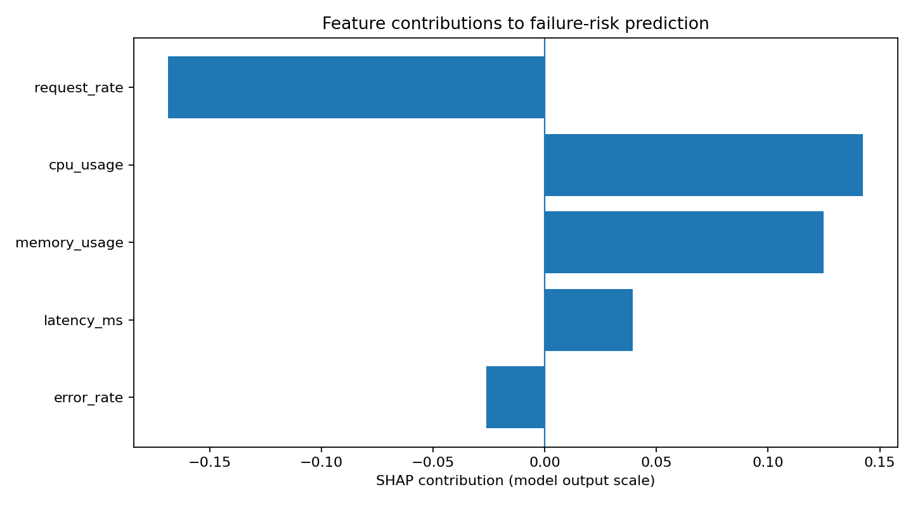

Bridging high-scale cloud telemetry and actionable site reliability engineering. Combining Prometheus real-time monitoring, Scikit-Learn failure prediction (ROC-AUC 0.751), SHAP-based explainability, automated root-cause analysis, and guarded dry-run Kubernetes remediation into a single pane of glass.
GitHub Pages hosts this static portfolio. Connect your live FastAPI backend, Prometheus observability stack, or Cloudflare Tunnel below:
Test the AIOps inference engine directly in your browser. Adjust telemetry sliders or select a production scenario preset to observe real-time failure prediction, SHAP feature attributions, diagnostic root causes, and guarded Kubernetes remediation.
Designed for production reliability with zero black-box automations. Every alert, prediction, and remediation command travels through a deterministic verification pipeline with dry-run safeguards.
FastAPI microservice instrumented with Prometheus client middleware, custom latency histograms, request counters, and synthetic load triggers (`/demo/load`, `/demo/error`).
Prometheus scraping every 15s, Alertmanager routing, and Grafana dashboard visualization. Custom rule definitions evaluate multi-level system degradation thresholds.
Scikit-Learn Random Forest model predicting impending failure risk from 5 time-series features. SHAP TreeExplainer outputs human-readable attribution waterfalls.
Explainable rule-based diagnostic engine scoring failure candidate causes from metrics, logs, and deployment events to eliminate guesswork during active incidents.
Conservative sizing engine recommending CPU/Memory request and limit rightsizing actions with strict min/max thresholds to balance cost efficiency and SLA safety.
Allowlisted remediation executor with dry-run protection (`executed: false`), enforcing namespace validation and requiring explicit human-in-the-loop approvals.
A comprehensive suite of interconnected engineering modules forming the complete AIOps lifecycle from raw metrics to automated diagnosis.
FastAPI application instrumented with Prometheus client metrics, custom latency histograms, request counters, and synthetic error/load triggers.
Automated time-series metric collector and schema transformation pipeline ensuring feature consistency between live telemetry and ML datasets.
Supervised Random Forest classification pipeline predicting failure risk with cross-validation (ROC-AUC 0.751, Precision 0.455).
Local and global feature attribution using SHAP TreeExplainer, generating JSON summaries and waterfall visualization plots for SREs.
Deterministic diagnostic engine evaluating multi-source telemetry, log signatures, and cluster events with confidence scoring.
Rightsizing engine analyzing CPU and memory utilization patterns, recommending deployment replica adjustments and container resource specifications.
Responsive single-pane-of-glass dashboard (`/dashboard`) featuring Chart.js telemetry charts, scenario simulation presets, and live alerts.
Direct PromQL client integration extracting real-time metrics, distinguishing available versus missing telemetry clearly.
Production alert matrix comprising 5 alerting rules with Alertmanager routing and webhook receivers (`/api/webhook/alerts`).
Allowlisted Kubernetes action planner (`/api/remediation/plan`) with default dry-run mode, safeguard validation, and audit logging.
Unified orchestration pipeline (`/api/orchestration/analyze`) synthesizing live telemetry, severity assessment, and action command preview.
Full automated test suite with 22 regression and API integration tests, runbooks, acceptance criteria checklists, and GitHub Pages documentation.
Instead of treating the Random Forest classifier as an opaque black box, SHAP TreeExplainer quantifies each telemetry feature's marginal contribution to failure probability.
When an automated system flags an impending outage, on-call engineers cannot act without understanding the root driver. SHAP provides:

Engineered using industry-standard DevOps, SRE, and machine learning tools.
All endpoints provide JSON payloads compliant with enterprise OpenAPI/Swagger 3.0 specifications.
| Method | Endpoint | Description | Safeguard / Status |
|---|---|---|---|
| GET | /health |
Service health check and dependency readiness probe | Always enabled |
| GET | /metrics |
Standard Prometheus scraper endpoint | PromQL Compatible |
| GET | /api/metrics/live |
Live PromQL query aggregator with missing metric reporting | Module 8 |
| POST | /api/ml/predict |
Predict failure risk and classification from telemetry feature vector | Module 3 |
| POST | /api/ml/explain |
Extract local SHAP feature attributions and top failure drivers | Module 4 |
| POST | /api/remediation/plan |
Plan allowlisted remediation action with namespace validation | Dry-Run Default (executed: false) |
| POST | /api/orchestration/analyze |
End-to-end incident analysis, risk scoring, and command recommendation | Module 11 Unified |